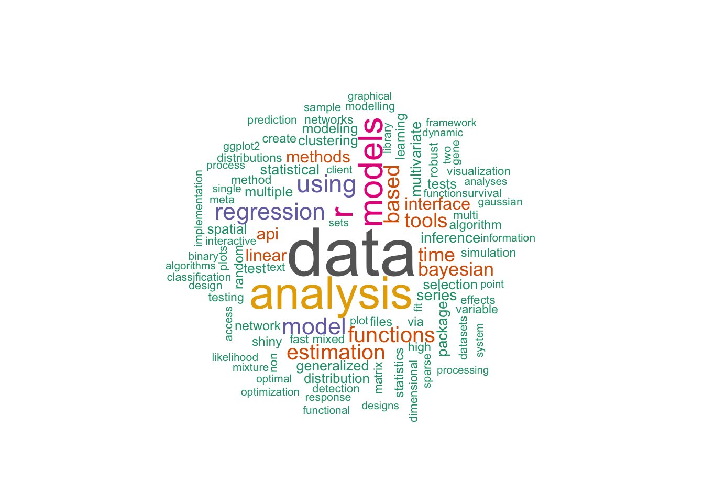

.
using r models analysis data
917 1333 1417 2025 3223
Word Cloud
Code
wordcloud( names(word_freq), word_freq, # scale=c(8,.2), min.freq=3, max.words=100, random.order=FALSE, rot.per=.15, colors=brewer.pal(8,"Dark2") )pp =recordPlot() # record the plot# the size and resolution for the png required some iterative optimizationpng("wordcloud.png", width=300, height=300, res=75) replayPlot(pp) # replay the plot in png devicedo <-dev.off()

Figure 1: WorldCloud for CRAN packages
Using tm
For some of the common text manipulation (punctuation, stopword removal etc) we could also use specific packages, e.g. tm.
Source Code
---title: "Word Clouds with R"date: 2023/06/15date-modified: last-modifiedcategories: - word cloud - text analysis - web scrapingimage: wordcloud.pngformat: html: default revealjs: output-file: revealjs.html---# Setup```{r}#| label: setup#| warning: false# define librarieslibrary(tidyverse)library(wordcloud)require(RColorBrewer)require(stopwords)# get dataurl <-"http://cran.r-project.org/web/packages/available_packages_by_date.html"html <- rvest::read_html(url) # harvest urldf <- rvest::html_table(html) # turn into dataframehead(df[[1]],3)sw <- stopwords::stopwords("english") # define stopwordshead(sw,3)```# Word frequenciesNext we extract the word frequencies as table```{r}#| label: word_frequenciesntop <-100word_freq <- df[[1]] %>%pull(Title) %>% stringi::stri_extract_all_words() %>%unlist() %>%tolower() %>%# exclude stopwords in sw. equivalent: words = words[!words %in% sw] .[!. %in% sw] %>%table()sort(word_freq) %>%tail(5)```# Word Cloud```{r}#| label: fig-wordcloud#| fig-cap: WorldCloud for CRAN packageswordcloud( names(word_freq), word_freq, # scale=c(8,.2), min.freq=3, max.words=100, random.order=FALSE, rot.per=.15, colors=brewer.pal(8,"Dark2") )pp =recordPlot() # record the plot# the size and resolution for the png required some iterative optimizationpng("wordcloud.png", width=300, height=300, res=75) replayPlot(pp) # replay the plot in png devicedo <-dev.off()```# Using tmFor some of the common text manipulation (punctuation, stopword removal etc) we could also use specific packages, e.g. tm.```{r}#| label: tm #| eval: false #| echo: falseap.corpus <-Corpus(DataframeSource(data_frame(doc_id=t[,2], text=as.character(t[,3])))) ap.corpus <-tm_map(ap.corpus, removePunctuation) ap.corpus <-tm_map(ap.corpus, tolower) ap.corpus <-tm_map(ap.corpus, function(x) removeWords(x, sw)) ap.tdm <-TermDocumentMatrix(ap.corpus) ap.m <-as.matrix(ap.tdm) ap.v <-sort(rowSums(ap.m),decreasing=TRUE) ap.d <-data.frame(word =names(ap.v),freq=ap.v) table(ap.d$freq) pal2 <-brewer.pal(8,"Dark2") png("wordcloud_packages.png", width=1280,height=800) wordcloud(ap.d$word,ap.d$freq, scale=c(8,.2),min.freq=3, max.words=Inf, random.order=FALSE, rot.per=.15, colors=pal2) dev.off()```